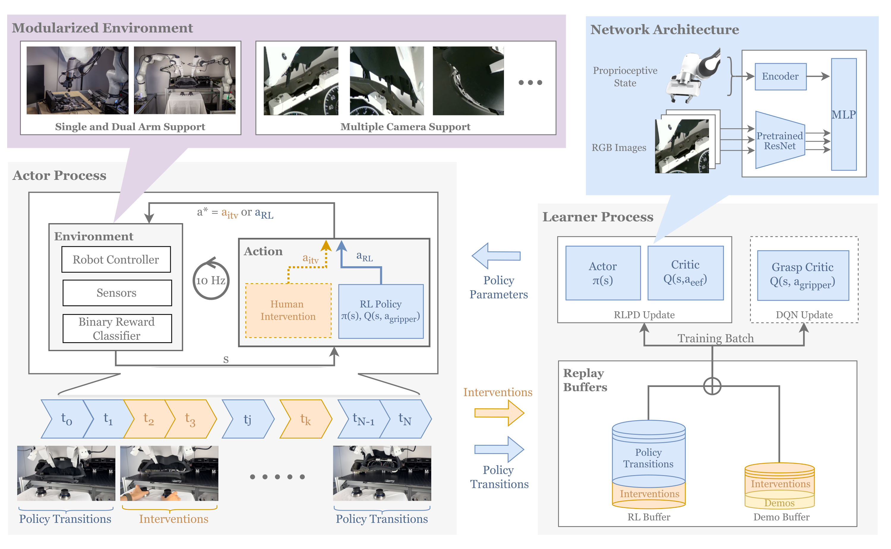

Precise and Dexterous Robotic Manipulation via Human-in-the-Loop Reinforcement Learning
Luo 等 · 2024/2025 · CoRL 2024 · arXiv:2410.21845 · Zotero IVIAB7U8
HIL-SERL 把人类纠正当成高价值训练信号，而非失败后的惩罚：演示、纠正、RLPD、视觉预训练和安全控制器一起构成真机 RL 系统。
§1 Introduction：真机 RL 的瓶颈为什么不只是样本数
真实机器人 RL 需要同时解决奖励、探索、安全、复位和视觉泛化。单纯把 SAC/PPO 搬到真机，稀疏奖励会让机器人长时间无效探索，危险动作损坏设备，自动 reset 又难覆盖复杂接触任务。人类演示能启动策略，却通常把人限制为“事前提供数据”，没有利用训练中暴露的失败状态。
HIL-SERL 把人放进在线回路：少量 demonstration 初始化 replay，预训练视觉表示和高效 off-policy RL 负责自主改进；当策略进入危险或困难状态时，人类接管并提供 corrective trajectory。纠正不是负面惩罚，而是高质量、恰好落在当前失败分布上的新数据。
展开原文 · 系统目标
“a reinforcement learning system for vision-based manipulation”
§2 Related Work：SERL、模仿学习与人类干预怎样组合
DAgger 通过 learner state 上的专家标签修正分布偏移，但主要优化 supervised imitation；安全 RL 常把 intervention 当成本或终止信号。SERL 提供样本高效真实机器人 actor-critic 系统，HIL-SERL 在此基础上让人类 intervention 同时承担安全保护、失败恢复和数据采集。
它与 VLA+RL 的关系是系统范式而非大模型结构：如果把 policy 换成 VLA，人类纠正可以专门修补语义模型不擅长的接触和恢复状态；但全参更新大 VLA 可能不稳定，因此后续方法常冻结主干、训练 residual/adapter 或把 intervention 转成 preference/critic 信号。
§3 问题设定：SFT 到底漏掉了什么
VLA 预训练与 SFT 解决“从观测到动作的模仿”，但部署是闭环过程：动作会改变下一帧，错误会把策略带到演示没有覆盖的状态。真实 RL 的稀疏奖励、危险探索和复位成本使复杂双臂/精密操作长期被认为不实用。
观测由多视角 RGB 与本体状态组成，策略基于预训练视觉骨干；低层控制器负责把策略输出安全地送到机器人。
展开原文 · 核心主张
“integrates demonstrations and human corrections, efficient RL algorithms”
§4 方法总览：反馈信号怎么走
这张图不是一条从左到右只运行一次的流水线，而是一个持续循环的真机训练系统。左侧的 Actor Process 在机器人旁边负责“看见环境并执行动作”；右侧的 Learner Process 在计算机上负责“从历史数据中更新网络”；右下角的两个 Replay Buffers 则像两本用途不同的训练日志。三者异步运行，所以机器人采数据时，学习器可以同时训练，不必每更新一次就让整套系统停下来。
读箭头时先分清三种东西：灰色的状态与训练批次在系统内部流动；蓝色的 Policy Transitions / Policy Parameters 表示策略自己产生的数据和学习器返回的新参数；橙色的 Interventions 表示人类接管产生的高价值纠正。颜色不是装饰，它在回答“这条数据是谁产生的、最后进入哪个 buffer”。
整张图的核心因果链是：机器人产生观测 → 策略提出动作 → 必要时人类覆盖动作 → 执行后的状态转移分别写入 replay → learner 混合抽样并更新 actor/critic → 新参数再发回机器人。HIL-SERL 的贡献不只是“加一个人类按钮”，而是把人类纠正安全地接进这条闭环，并让一次纠正能被 off-policy 学习器重复利用很多次。
先看 ①②：机器人究竟看见什么、网络怎样把图像和关节状态变成动作依据。再看 ③④：策略动作与人类动作如何二选一，以及两类数据为什么写入不同 replay。最后看 ⑤⑥：学习器怎样更新网络，并把新参数送回 actor 形成下一轮闭环。点击图中数字时，下方会同时切换到对应的逐步解释。

1. 环境先把现实世界整理成可学习的状态与奖励
机器人每个控制周期从多路相机和本体传感器读取观测。低层控制器负责安全执行，二值成功分类器负责把“任务完成了吗”变成 0/1 奖励；两者分别解决动作落地和学习反馈，不能混为同一个网络。
图里的 10 Hz 是系统时间尺度：约每 0.1 秒读一次状态并选择一次动作。策略看到的是相机图像、关节与末端状态，不是论文中抽象的一个符号 s；符号 s 只是把这些实际输入合称为“当前状态”。
输入是什么：真实相机画面、关节角/速度、夹爪状态与末端位姿，以及任务开始时设定的控制边界。
这一步究竟做什么：把连续的物理世界转换成策略可以读取的数字观测，并在动作执行后判断任务是否成功。
输出到哪里：状态 s 被送进策略网络；0/1 奖励会随这一步交互记录一起进入 replay。
为什么不能省略：没有安全控制器，随机探索可能损坏设备；没有可靠奖励，critic 就不知道哪种行为更接近成功。
2. 视觉与本体状态被编码成同一份决策特征
多路 RGB 图像共享 ImageNet 预训练的 ResNet-10，得到视觉 embedding；关节、夹爪和末端位姿等本体状态经过单独 encoder。两类特征拼接后进入 MLP，形成 actor 与 critic 都能使用的紧凑状态表示。
“共享 ResNet”意味着每台相机不是各训练一套视觉网络，而是使用同一组视觉参数处理不同视角。这样既减少参数和真机样本需求，也迫使不同相机的画面落到可比较的特征空间。
输入是什么：多视角 RGB 像素，以及机器人自身的数值状态。
这一步究竟做什么：ResNet 把图像压缩成描述物体与场景的向量，encoder 把本体数值转换成相近尺度的向量，再把它们拼接。
输出到哪里：融合后的特征同时供 actor 选动作、供 critic 判断动作价值。
为什么不能省略：直接用少量真机数据从零学习视觉通常既慢又不稳定；预训练视觉把有限交互预算留给控制学习。
3. 每个时刻都在策略动作与人类动作之间选择
策略先给出 a_RL。若操作者不介入，a*=a_RL；若操作者用 SpaceMouse 接管，a*=a_itv，机器人执行的是人类动作。这里是“覆盖”而不是“奖励惩罚”：人类直接改变当前动作，从而及时阻止碰撞或把机器人带回可恢复区域。
同一条 rollout 可以出现多段橙色 intervention。人类不需要从头遥操作整条轨迹，只在错误苗头出现时接管几步；接管结束后策略继续自主运行，所以人类时间集中花在模型真正不会的地方。
输入是什么：策略候选动作 a_RL、操作者在需要时给出的 a_itv，以及当前机器人状态。
这一步究竟做什么：仲裁器选择本控制周期真正执行的 a*；介入时人类拥有临时控制权。
输出到哪里：a* 被发送给低层控制器；介入标记和动作来源被保存在轨迹中，供后续数据分流。
为什么不能省略：只把失败记为负奖励已经太晚；即时接管既降低硬件风险，又提供如何从困难状态恢复的正确动作。
4. 轨迹按照“谁产生动作”写入两个 replay buffer
普通的策略 transition 只写入 RL Buffer；人类 intervention 同时写入 RL Buffer 和 Demo Buffer；训练前采集的完整专家演示只属于 Demo Buffer。这套分流保留了数据来源，让 learner 能控制专家先验与自主经验的比例。
一条 transition 至少包含当前状态 s、实际动作 a*、奖励 r 与下一状态 s'。replay 保存的是可反复抽样的学习样本，不只是视频；因此同一次昂贵真机交互能够支持许多次神经网络更新。
输入是什么：策略自主片段、人工接管片段、任务奖励，以及训练前的专家演示。
这一步究竟做什么：按数据来源把 transition 写入 RL Buffer 或 Demo Buffer，并保留 intervention 身份。
输出到哪里：两个 replay 共同为 learner 提供训练 batch；它们不是按时间依次运行，而是持续被写入和抽样。
为什么不能省略：若全部混成一个池，少量高价值纠正会被大量普通轨迹淹没，学习器也无法稳定维持先验/在线数据比例。
5. RLPD 更新连续动作，DQN 单独更新离散夹爪动作
learner 从 Demo Buffer 与 RL Buffer 等量抽样。critic 先学习 Q(s,a)，即某动作对未来成功的长期价值；actor 再调整为更常提出高 Q 动作。这是 off-policy：数据不必由“当前最新版策略”刚刚产生，旧演示和旧纠正仍能反复训练。
末端移动属于连续动作，而夹爪 open/close/stay 是离散动作。论文没有强迫一个高斯 actor 同时表达两种数学性质不同的动作，而是用 RLPD 训练连续 actor/critic、用 DQN grasp critic 选择离散夹爪命令，最后把两部分动作拼接执行。
输入是什么：从两个 replay 等量抽出的训练 batch，以及上一版 actor、critic 和目标网络。
这一步究竟做什么：critic 学会给动作打长期价值分；actor 根据这些分数改善连续控制；grasp critic 学习离散夹爪选择。
输出到哪里：产生更新后的 policy parameters，等待发送给 actor process。
为什么不能省略：replay 只是存数据，不会自动产生更好行为；真正把奖励与纠正转化为策略改进的是这些价值估计和参数更新。
6. 新参数回到机器人，下一轮交互改变数据分布
learner 周期性把更新后的参数发回 actor。actor 随后在相同传感器与控制接口上执行更好的策略，产生新的自主轨迹；若仍在某些状态犯错，人类再次接管，新的纠正又进入 replay。这是闭环学习，而不是先收完固定数据再训练一次。
随着策略改善，理想现象是成功率上升、完成周期缩短、intervention rate 下降。后两项很重要：如果成功率提高但每次仍需要大量人工接管，系统还没有真正学会自主完成任务。
输入是什么：learner 更新后的网络参数，以及 actor 端仍在持续产生的真实交互。
这一步究竟做什么：替换 actor 的旧参数，让下一批动作受最新学习结果影响，同时继续采集策略尚未覆盖的状态。
输出到哪里：形成下一轮“执行—记录—训练—下发”的循环，直至成功率和人工成本达到目标。
为什么不能省略：只在离线数据上更新无法验证新策略会把机器人带到什么新状态；回到真实闭环才能发现并修正分布偏移。
§5 机制细拆：动作、价值与更新边界
上面的热点说明了模块在哪里，这一节进一步回答四个实现问题：连续末端动作和离散夹爪动作怎样组合，0/1 成功信号怎样分配到更早的动作，在线纠正怎样进入训练批次，以及 actor 与 learner 为什么要异步。这些接口决定方法能否在真机上稳定工作，比单独背 RLPD、DQN 或 ResNet 的名字更重要。
§6 目标函数：把直觉压缩成可检查的量
前一节说清了信号路径，这里把核心优化目标写成教学化公式。读公式时依次检查：回报影响谁、数据支持在哪里、预训练策略受到什么约束。
- $r$
- 成功分类器与任务奖励
- $\pi$
- 接收图像和本体状态的策略
- $H$
- 真实任务时域
actor、critic、环境采样和 replay 分布式运行；人类可以在一条轨迹中多次接管，策略随后离线吸收纠正。
§7 训练与评测：数字是在什么条件下得到的
只看最终成功率会隐藏数据预算、仿真/真机差异和基座强弱。本节把论文的实验对象与比较关系放回同一张表。
| 策略与动作 | 观测由多视角 RGB 与本体状态组成，策略基于预训练视觉骨干；低层控制器负责把策略输出安全地送到机器人。 |
|---|---|
| 训练反馈 | 成功分类器产生稠密可学习奖励，人类纠正作为高质量 action 进入 replay；RLPD 同时采样演示和在线数据。 |
| 更新方式 | actor、critic、环境采样和 replay 分布式运行；人类可以在一条轨迹中多次接管，策略随后离线吸收纠正。 |
| 实验覆盖 | 任务包括 Jenga 抽击、锅中翻物、主板/仪表盘/正时皮带装配、IKEA 搭建和双臂交接；常用约 20–30 条演示启动。 |
| 关键对照 | HG-DAgger 主要模仿人类纠正，HIL-SERL 还利用失败后的奖励与自主尝试；SERL 没有人类在线纠正，复杂任务更难启动。 |
§8 结果怎么读：证据、因果与可迁移结论
多项精密和动态真机任务在 1–2.5 小时内接近满成功率，平均成功率约为模仿学习的 2 倍，执行快 1.8 倍。
HG-DAgger 主要模仿人类纠正，HIL-SERL 还利用失败后的奖励与自主尝试；SERL 没有人类在线纠正，复杂任务更难启动。
真机 RL 的性能往往来自算法、数据管线、安全控制和人类反馈四者共同闭环。
§9 复现与工程检查
前一节判断了证据强度，复现时还要把训练信号对齐、时间尺度和数据统计逐项落地，否则“同名算法”也可能得到完全不同的结果。
- 成功分类器误判会污染所有回报；需统计 intervention rate、训练小时和 cycle time；安全控制与复位流程必须纳入系统。
- 先跑通不加 RL 的预训练/SFT 基线，并保存逐任务成功率与失败视频。
- 同时记录环境步数、真实墙钟时间、人工介入次数、更新次数和推理延迟。
- 把奖励、终止、action chunk mask 与归一化统计做成可视化单元测试。
§10 适用边界与研究启发
它证明的是精心集成系统的可行性，不是单一算法插件；人类监督和任务工程仍有成本。
真机 RL 的性能往往来自算法、数据管线、安全控制和人类反馈四者共同闭环。